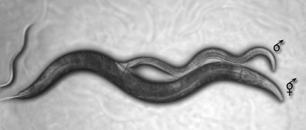
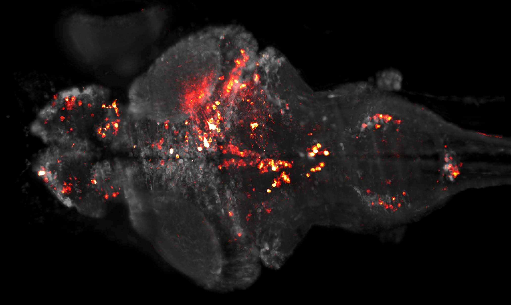
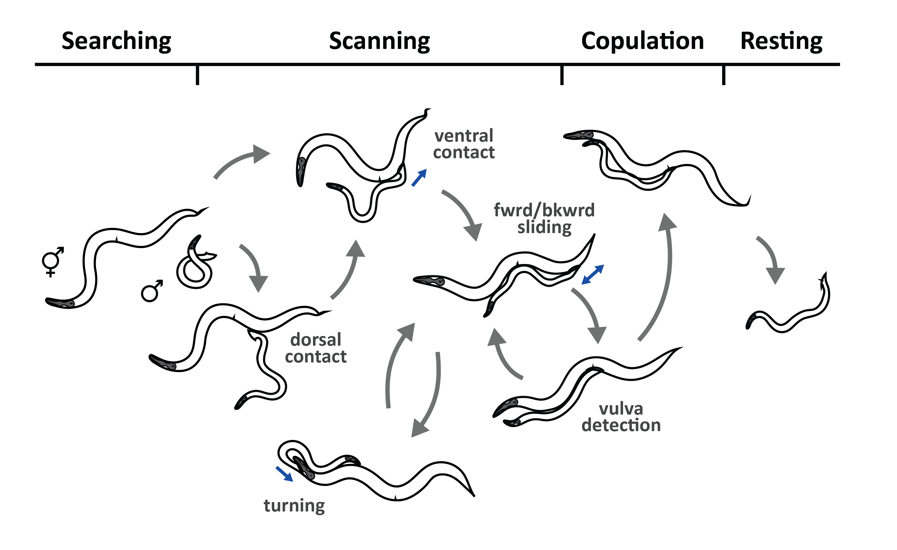
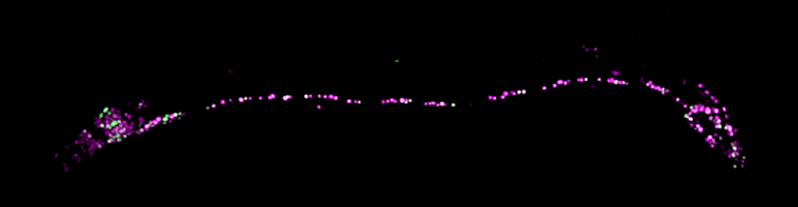
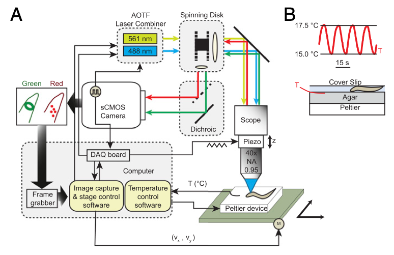
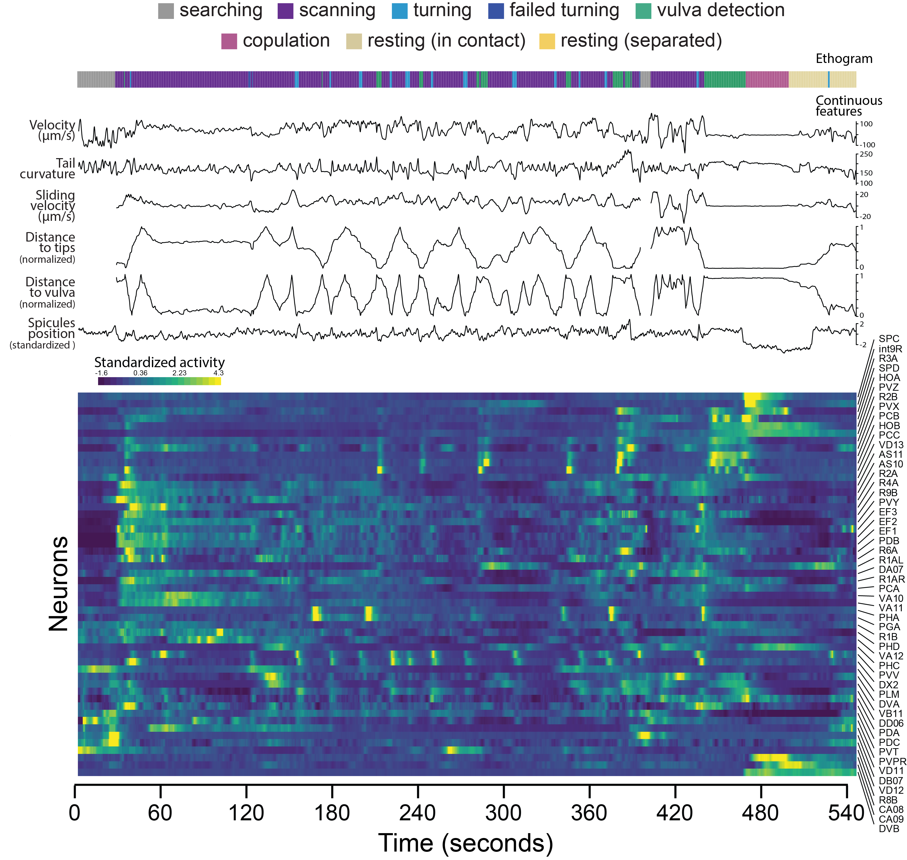
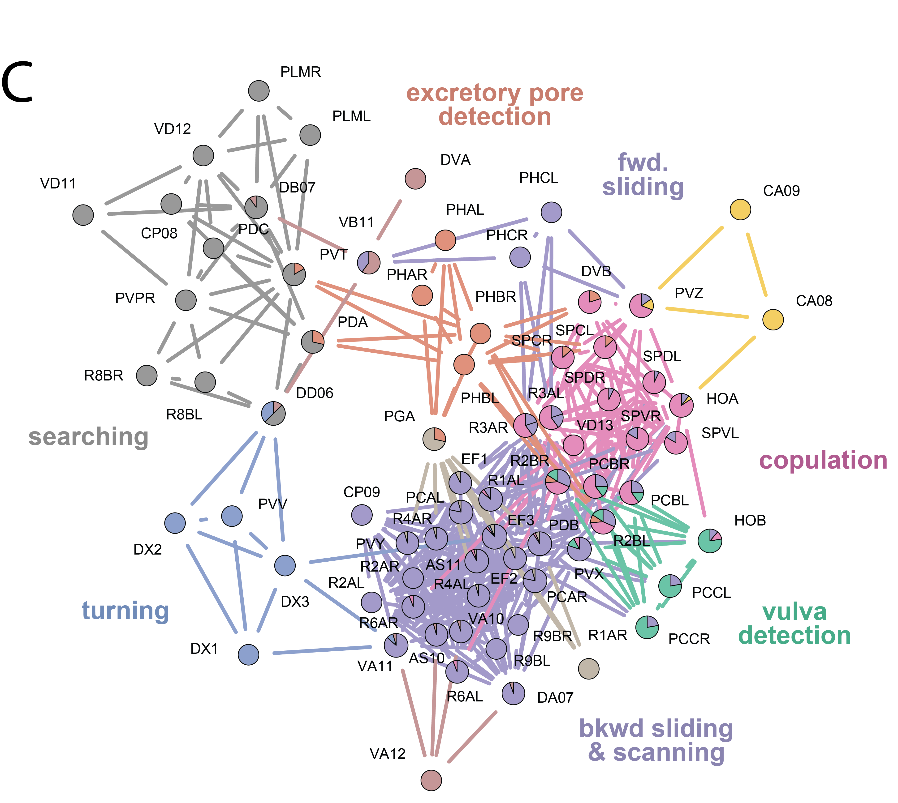

https://bit.ly/MCB294_Worms_2022
Aravi Samuel, 2022

Circuit-wide functional organization of a multistep behavior
Whole-brain imaging
Naturalistic behavior

Every mating is the same
Every mating is different
Naturalistic behavior
A two brained nervous system

anterior
$\sim$200 neurons
posterior
$\sim$100 neurons
A connectome
Whole-brain imaging

spinning disk confocal in a tracking environment
10 brain volumes per second with multiple colors
Measuring brain and behavior
Cross-correlation and hierarchical clustering of seven whole-brain datasets
Link clustering
